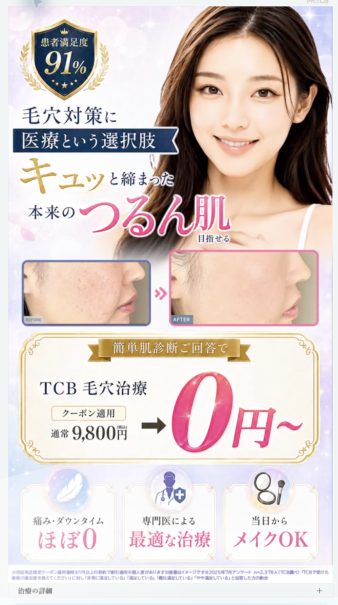

FV｜一瞬で「つるん肌」を理解させる
- 最重要ベネフィットを画面中央で最大強調
- 明るさ・光・桜・笑顔で期待感を作る
- 想定ペルソナは20〜40代女性
青木さんの詳細言語化
ページを開いた瞬間、真ん中に「つるん肌」が出てくる。「キュッと締まった、本来のつるん肌」という見せたい内容がすぐ入るため、ユーザーにとって分かりやすい。
ペルソナは20〜40代女性。理想像やBefore／Afterの人物は30代前後、FVのモデルは20代前後に見える。モデルが自分より若くても、若い理想像に憧れる女性には刺さる可能性がある。4問目の「素肌で出かけたい」「メイクをもっと楽しみたい」「写真・近距離に自信を持ちたい」「肌を褒められたい」という欲求も、高年齢層より20〜40代との整合が高い。
心理動線では、広告クリエイティブから流入した直後に「キュッとつるん肌」が入り、光が広がる爽やかな画面、笑顔の女性、明るい肌によってテンションを上げる。
横展開目立たせたい言葉を最も強くし、スマホ画面の正面上部から中央へ置く。全体を明るくし、桜や光の演出、笑顔の女性、明るい肌で理想状態を伝える。
改善仮説Before／Afterは同じ大きさにした方が変化を比較しやすい。現状はAfterを大きくして理想状態を強調しているが、同寸の方がBeforeからAfterへの変化を認識しやすい。